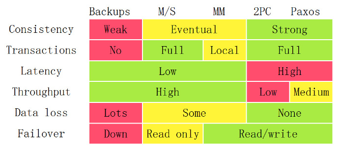

分布式笔记整理
分布式系统定义
想象有这样一台计算机：
- 极其高速的CPU
- 极其宽大的总线
- 极其大容量的内存
- 极其大带宽的网卡
- 极其稳定的组合在一起
- 再连接上一条及其稳定的线路
我觉得即使再贵，买这样一台单机处理能力极其强劲的服务器就可以满足大多数应用场景，可是没有，所以才有了分布式。
分布式是个很广泛的话题，从我十年前我刚上大学到现在，伴随着大数据及云服务，一直保持着热度，先来看看分布式系统的定义，摘自《分布式系统概念与设计》。
分布式系统是一个硬件或软件组件分布在不同的网络计算机上，彼此之间仅仅通过消息传递进行通信和协调的系统。
可以看出一个分布式系统应该具备：
某博主的看法
- 分布性
- 对等性（kb注：保持疑虑，下文有讨论）
- 并发性
- 缺乏全局时钟
- 故障总是会发生
我的看法（再次提一下第一性原理 ;P）
- 多机
- 网络
解决哪些问题
- 单机处理能力差
- 单点故障
带来哪些问题
- 通信异常
- 三态 (Success/Failure/Timeout)
- 网络分区
- 节点故障
总的来说：网络是不稳定的！
讨论下一个场景？
- 数据分区
- 数据冗余
问题：哪个才算分布式？
分布式系统分类
按我粗浅的认知，分布式系统可以归为两大类
- 分布式计算系统
- 分布式存储系统（数据的分布及同步问题）
由于对分布式计算领域缺乏了解，本文讨论范围多以分布式存储为背景。
CAP理论
提到分布式，不得不提这三个特性：
- Consistency: Every read receives the most recent write or an error
- Availability: Every request receives a (non-error) response
- Partition tolerance: The system continues to operate despite an arbitrary number of messages being dropped or delayed by the network between nodes
在分布式系统中，三者不能同时满足。这就是 CAP 理论，简单地说就是：
- 要想让数据避免单点故障，就得写多份数据（保证P）
- 写多份的问题会导致数据一致性的问题（导致C）
- 数据一致性的问题又会引发性能问题（导致A）
要如何衡量取哪两者呢？看看下面这张图，产生了三个交叉系统

- CA 放弃分区容错性，加强一致性和可用性，其实就是传统的单机数据库的选择
- AP 放弃一致性（这里说的一致性是强一致性），追求分区容错性和可用性，这是很多分布式系统设计时的选择，例如很多 NoSQL 系统就是如此
- CP 放弃可用性，追求一致性和分区容错性，基本不会选择，网络问题会直接让整个系统不可用
结合分布式的特征，我们单独分析下三者的适用场景：
- P 是每个分布式系统基本的特征，必须保证，无法避免
- A 是整个系统性能的考量，谁会用一个龟速还可能要超时重连的系统
- C 这里强调的是强一致性，现实中强一致性的需求很少，只好在一致性上做妥协
所以在我看来，更通用的分布式系统要满足AP。
分布式ACID
ACID 在单机上，或者CP模型下实现起来是不难的，但前者是单点，后者更是损失了A，所以分布式事
物是整个分布式领域无法逃避的难题，下面就分布式事务的实现，从简陋到严谨，层层递进，试着阐
述行业内的一些解决策略。
一致性模型
首先我们对C做个分类，上文提到，现实中对强一致性需求不大，我们把一致性拆解为一下三种模型：
- Weak 弱一致性：当你写入一个新值后，读操作在数据副本上可能读出来，也可能读不出来。比如：某些 cache 系统，网络游戏其它玩家的数据和你没什么关系，VOIP 这样的系统，或是百度搜索引擎呵呵（kb注：陈皓原话）。
- Eventually 最终一致性：当你写入一个新值后，有可能读不出来，但在某个时间窗口之后保证最终能读出来。比如：DNS，电子邮件、Amazon S3，Google 搜索引擎这样的系统。
- Strong 强一致性：新的数据一旦写入，在任意副本任意时刻都能读到新值。比如：文件系统，RDBMS，Azure Table 都是强一致性的。
从这三种一致型的模型上来说，我们可以看到，Weak 和 Eventually 一般来说是异步冗余的，而 Strong 一般来说是同步冗余的，异步的通常意味着更好的性能，但也意味着更复杂的状态控制。同步意味着简单，但也意味着性能下降。先大概让我们来看看有哪些策略：
- Master-Slave
- Master-Master
- 2PC/3PC
- Two Generals Problem
- Paxos/Raft
一致性模型的说明，陈皓在这篇博文中已经阐述得非常清楚，强烈建议看一看！附上结论图：

前面说过，要想让数据有高可用性，就需要冗余数据写多份。写多份的问题会带来一致性的问题，而一致性的问题又会带来性能问题。从上图我们可以看到，我们基本上来说不可以让所有的项都绿起来，这就是著名的CAP理论：一致性，可用性，分区容忍性，你只可能要其中的两个。
结语
至此，一切还是遵循着 CAP 理论，但是，据说，Google 新发布的 Spanner 关系型 NoSQL 已经打破了 CAP，欲知详情，且听下回分解，或者，你现在就可以 google 一下。
参考资料：
https://en.wikipedia.org/wiki/Eventual_consistency
https://en.wikipedia.org/wiki/CAP_theorem
http://coolshell.cn/articles/10910.html
http://wuchong.me/blog/2014/08/07/distributed-storage-system-knowledge/
http://www.cnblogs.com/xrq730/p/4944768.html
http://www.jianshu.com/p/6cb8ffce7510
http://thesecretlivesofdata.com/raft/